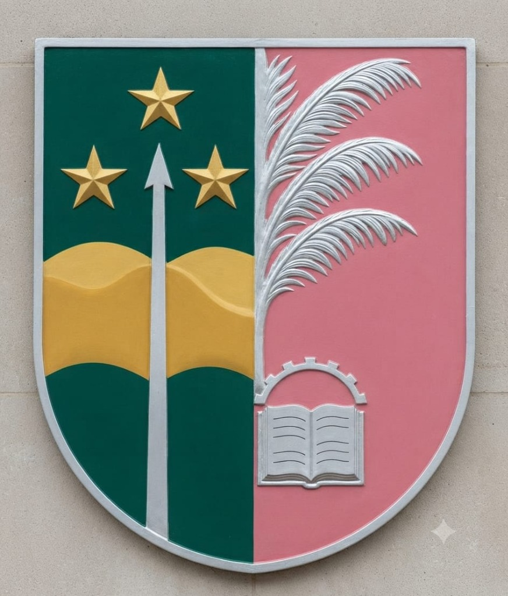

Scientia splendet et conscientia
|
REPUBLIQUE DEMOCRATIQUE DU CONGO
INSTITUT UNIVERSITAIRE MORAVE WILLSAMAL
FACULTE DES SCIENCES ET TECHNOLOGIES
B.P. 126 — MWENE-DITU
|
RELEVÉ DES COTES N° IUM-2027-M2-ISI-088/2026
Monsieur/Mademoiselle MUKENDI KALONJI ADOLPHE, né(e) à Mwene-Ditu, le 18 juillet 1992, a obtenu, à l'issue de la Première session de l'année académique 2027-2028 aux examens portant sur les matières prévues au programme de Deuxième Master en Ingénierie Sécurité Informatique à la Faculté des Sciences et Technologies, les cotes ci-dessous :
| N° | MATIERES SUIVIES | VOLUME HORAIRE | CREDITS | COTES OBTENUES .../20 |
|
|---|---|---|---|---|---|
| COURS | T.D. + T.P. + T.P.E. | ||||
| 1. | Développement de logiciels cryptographiques | 40 | 15+25+70 | 4 | 16 |
| 2. | Cryptologie avancée | 50 | 20+30+100 | 6 | 17 |
| 3. | Programmation réseaux | 50 | 20+30+100 | 6 | 15 |
| 4. | Méthodes et techniques de rédaction scientifique | 40 | 15+25+70 | 4 | 16 |
| 5. | Détection des intrusions et réponses aux incidents | 45 | 20+20+85 | 5 | 17 |
| 6. | Interconnexion et routage dynamique | 45 | 20+20+85 | 5 | 15 |
| 7. | Contrôle d'accès et extraction d'information | 30 | 10+15+50 | 3 | 16 |
| 8. | Audit et plan de la sécurité informatique | 20 | 10+10+30 | 2 | 17 |
| 9. | Sécurité des services en ligne | 30 | 10+15+50 | 3 | 15 |
| 10. | Entrepreneuriat-2 | 20 | 10+10+30 | 2 | 16 |
| 11. | Stage académique en entreprise / laboratoire | 0 | 00+150+100 | 10 | 18 |
| 12. | Projet tutoré & Soutenance du Mémoire de Master | 0 | 00+150+100 | 10 | 18 |
| Pourcentage pondéré | ............................................................................... | 83,25 % |
| Crédits validés | ............................................................................... | 60 / 60 |
| Décision du jury | ............................................................................... | TRÈS BIEN (GRANDE DISTINCTION) |
Fait à Mwene-Ditu, le 27 août 2026
|
Le Secrétaire Académique de la Faculté
Ir. Mbuyi Kizito Justin
Chef de Travaux — Secrétaire Académique
|
Le Doyen de la Faculté
Prof. Dr. Doyen de la Faculté
|
Agrément Ministériel N°83/MINESU/CAB.MIN/SMM/JPK/LMM/2018 du 09 Avril 2018 — Institut Universitaire Morave Willsamal — B.P. 126, Mwene-Ditu
Réf :
IUM-2027-M2-ISI-088/2026 | SHA-256 : 6e94616c4251b2d400886bf3efc1c2042964fa04b3d03addcaf375835d3fbeba